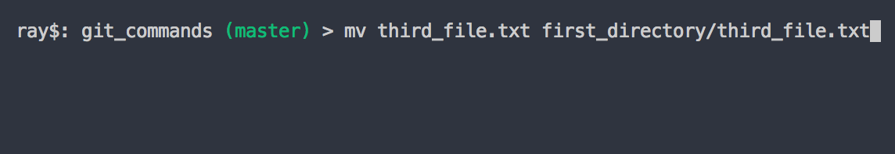

Working with git.
git init
Set up the initial git tracking folder.

git add
Add file to staging area.
git add all
Add file to staging area.

git commit -m
Commit files with a message.

git commit -am
Be careful using this, it does commit all, so if there are somethings you didn't want to include in the change, don't use this.
Files that are not being tracked or files that are being deleted are not included in this.
Works best for modifications.
Commit all files with a message.

git remove file that's been deleted.
If you delete the file not using git(eg. move to trash from folder), you still have to make git aware.
You need to still stage the deleted file with git add "filename".
Then you can commit to the delete.


git delete file.
You can have git do the whole delete.
It adds and moves to the staging area in this step.
The commit is still needed.

git rename file.
If you rename the file inside the directory folder.

We need to add the primary to the stage, and remove the first file.
git then recognizes the changes and renames it.
Then just make the commit.
git rename file with git.
using th mv command it takes the current file and the new name as the arguments.
Then make the commit.
Moving to a directory is the same. The second argument has the directory as well as the file name.
Ignoring files.
Create a .gitignore file in the root of the directory.
These are a set of rules that git can use to follow to ignore certain files.
Simple instructions are words or basic regular expressions.(* ? [aeiou] [0-9])
You can also negate expressions with !
*.php, would be ignore all php.
!index.php would not ignore.
ignore all files with a trailing slash assets/videos/
comment with a #.
It's best to create the file from the command line. Using nano.
It will create a new file inside the current directory.

Now we want to include that file in git.

Files that should be ignored.
- compiled source code.
- packages and compressed files.
- logs and databases.
- operating system generated files
- user-uploaded assets(images, PDFs, videos)
Branches
- branches allow you to try new ideas with out mucking up the good code.
- Isolate features or section of work.
git view branches.
To view all the branches us git branch.
git new branch.
git branch with new name.
git checkout branch.
git checkout the branch.
git create and switch branch at the same time.
give your branches useful and meaningful names.
Using checkout -b with the new name will create and checkout.
Compare branches
Using git diff.
Using git diff --color-words.
Using get branch --merged you can view the commits made between.
Using this info, below we can see that new_feature is no longer needed
because new_index has all its commits, it's sequential.
Comparison of content.

Renaming branches
You can rename using the move with the new name.
Deleting branches
Delete using the -d.
Merging branches
First make sure you are in the branch you want to be receiving.
Then use the merge command.
Stash
Saving changes in the stash.
The stash is a place we can temporarily put our changes without having to commit.
Viewing stash changes.
Use git stash list.
You can use it any branch, it will carry over.
It will say which branch the change was made on.
Use git stash show -p stash@{0} to view the changes.
Retrieving changes from the stash.
This will bring those changes into whatever branch or directory we're working on.
git stash pop, inserts and deletes from stash.
git stash apply, makes a copy and applies it while leaving the other in the stash.
If we don't specify which stash it grabs the first one, so if you have multiples
make sure you index which one {?}.
If you find out you're in the wrong branch, just do a git stash save and switch branches.
Deleting the stash.
git stash drop stash@{?}.
If you end up with a bunch of stashes and you want to delete them all do
git stash clear
Working with remote repositories.
Create repository.
Go to github and make new repository. Copy the link. Paste into terminal.